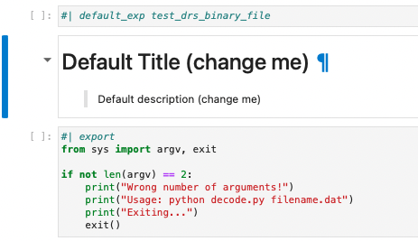

Conversion to NbDev
A short description of Converting HighResAnalysis to NbDev
Motivation
HighResAnalysis package was developed for analysis of the data that a diamond sensor group at ETH IPA is using to study the data collected in 2018 and 2019 beam tests at CERN and DESY. The main focus of study was on two 3D diamond detectors. The package works and efficient, however, the documentation is sparse and the future development and maintenance of the code is difficult. By converting the code to a notebook style will hopefully improve that.
lib2nbdev
lib2nbdev is a nice little package originally created by Zach Mueller at Novetta. The package was however based on the old version of the NbDev so I started by converting it to the new version. I hopefully will describe the details of that conversion on the projects website
Conversion
First steps
I forked the project from https://github.com/diamondIPP/HighResAnalysis to my personal account and cloned it on my laptop. The lib2nbdev2 package provides a convert_lib command that, when run in the project directory, creates a notebook for every .py file in the libdir. The libdir is determined from the settings.ini file, which is automatically created with most of the information inferred from the github info of the repository. Whatever the program is not able to infer it will ask.
All of your .py files should be preferably inside one directory (libdir) which is inside your root github project directory.
My project did not have such directory, so I created it and moved all the dirs with .py files into it.
This is however all the convert_lib program does at the moment. Most of the next steps are done manually. First, I run nbdev_new, which copied an extra necessary files into my project, some of which, for example, 00_core.ipynb were not needed, so I removed them.
Debugging
The following steps involved long process of adding basic, not yet extensive, documentation, because the convert_lib created only standard default titles and descriptions (see below), which need to be changed in order to have at least a useful sidebar.

Simultaneously, I was running the notebooks and fixing the errors that come up and also placing
#| hide
from nbdev import *
nbdev_export()At the bottom of each notebook
I should add that to convert_lib
First errors, I fixed were the import errors. In the notebooks I needed a path to the project that starts from the project lib dir.
import HighResAnalysis.convertinstead of just:
import convertI wonder if it also possible to automate
Next bugs that needed fixing belong to the type of code that works in a file but not in interactive coding:
Dir = Path(__file__).resolve().parent.parentWill give a NameError exception, because __file__ does not exists in interactive cell. It can be resolved by using a
try:
...
except:
...combo with a reasonable default in case of exception. For example:
try:
Dir = Path(__file__).resolve().parent.parent
except NameError:
Dir = Path().resolve().parent/"HighResAnalysis"The next type of code that does not work in interactive notebooks is anything related with argparse module. Luckily, the fastcore module provides a script module that helps to solve that problem.
The something like this:
from argparse import ArgumentParser
aparser = ArgumentParser()
aparser.add_argument('run', nargs='?', default=Analysis.Config.get_value('data', 'default run'))
aparser.add_argument('dut', nargs='?', default=Analysis.Config.get_value('data', 'default dut', default=0), type=int)
aparser.add_argument('--batch', '-b', nargs='?', default=None, help='batch name')
aparser.add_argument('--testcampaign', '-tc', nargs='?', default=Analysis.find_testcampaign())
aparser.add_argument('--verbose', '-v', action='store_false')
aparser.add_argument('--test', '-t', action='store_true')
aparser.add_argument('--remove_meta', '-rm', action='store_true')
aparser.add_argument('--convert', '-c', action='store_true', help='removes current analysis files and reconverts from the raw files')
aparser.add_argument('--runplan', '-rp', nargs='?', default=None, help='create new runplan.json for beam test <YYYYMM>')
args = aparser.parse_args()turns into something like this:
from fastcore.script import *@call_parse
def main(verbose:Param('verbosity level', action='store_false'),
test:Param('test run, nothing is converted, just initialize the classes', action='store_true'),
remove_meta:Param('removes ', action='store_true'),
convert:Param('removes current analysis files and reconverts from the raw files', action='store_true'),
run:str=Analysis.Config.get_value('data', 'default run'), # run number or batch id or scan id
dut:int=Analysis.Config.get_value('data', 'default dut', default=0), # DUT number in the telescope
batch:str=None, #batch name
test_campaign:str=Analysis.find_testcampaign(), # test campaign in the YYYYMM format, for example 201912
run_plan:bool=False, # create new runplan.json for beam test <YYYYMM>
):
...Check that the script works
Git Actions
NbDev version
Unfortunately after passing all test locally on my laptop the code failed to pass the tests on GitHub. One of the bugs, which I discovered last, was an older version of NbDev. Instead of getting the NbDev from fastchan I got it from the default mamba/conda channel, which of apparently significantly behind the fastchan version.
Mamba on GitHub
Another issue, which required a lot of effort on my part, was unavailability of ROOT package. The package is, however, available on conda and hence on mamba default channel. After spending some time learning about GitHub actions and Yaml from scratch. Luckily, the documentation on GitHub action is quite good and extensive. I found that there is an action available from mamba-org that allows one get a micromamba environment on the GitHub action virtual machine (VR). For the action to work I needed to provide it with environemnt.yaml, that is when I realized that none of my repository files are available on the VR by default but luckily there is a checkout action available from GitHub actions. That allowed the micromamba setup to work and to install root, however, it still did not make it available for import in a python script, because the environment was not activated. Here I learned something about the differences in bash flavors. If one looks at a log output of a git action, one sees that the default process to execute a bash command is bash -e {0}, which is not a logging shell. So one needs to change the default to bash -l {0} in order to have the login shell available, which allows to activate mamba environment. After that I was able to do python -c "import ROOT" test. However, I was not finished yet. The NbDev actions nbdev-ci and quarto-ghp changed the processing shell to bash and the ROOT was not available any longer. To remedy this I simply copied the NbDev workflows into my explicitly and changed the shell back to bash -l. This finally, gave me the green mark on both actions and I was able to finally see the projects website :-)